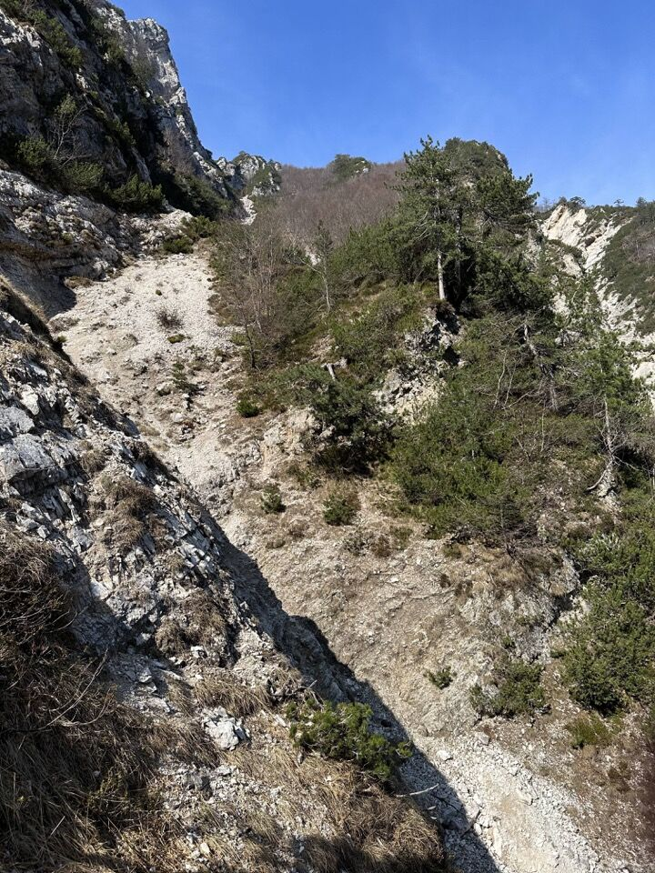
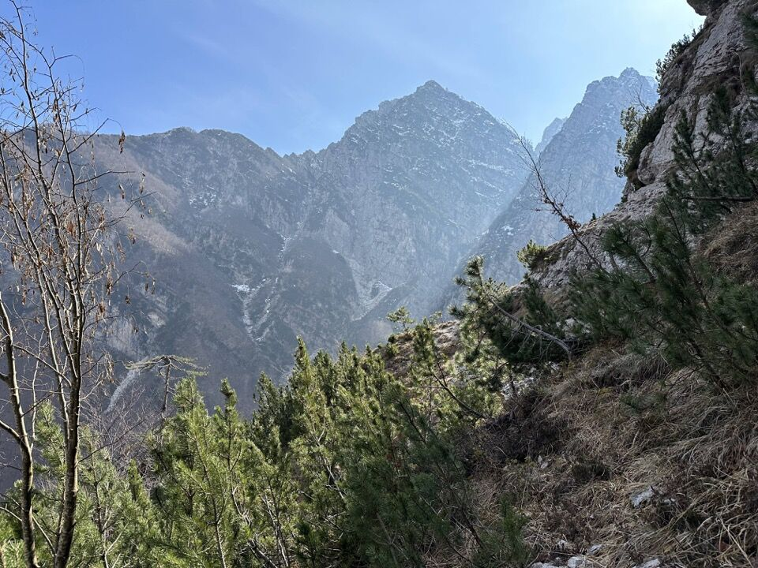
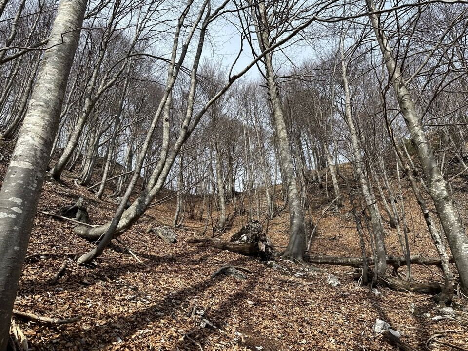
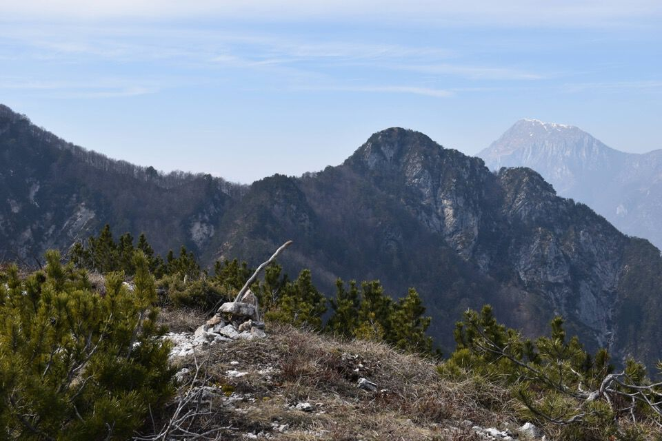
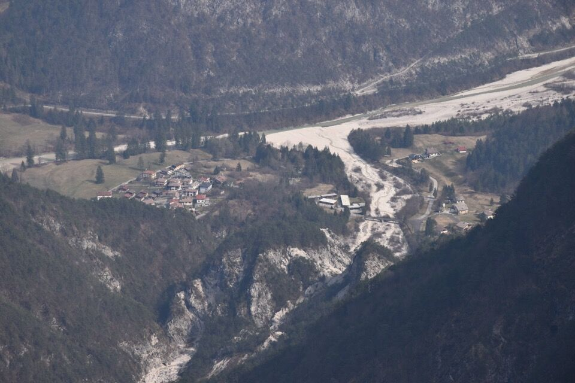
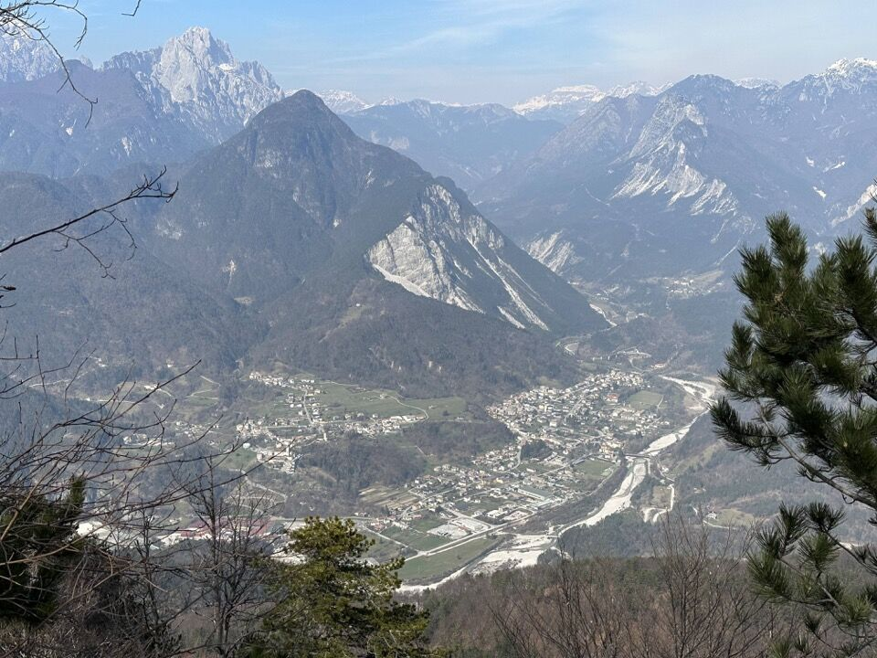
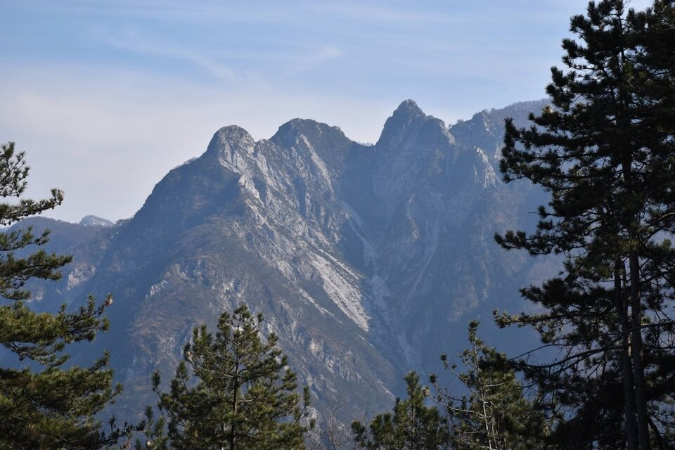
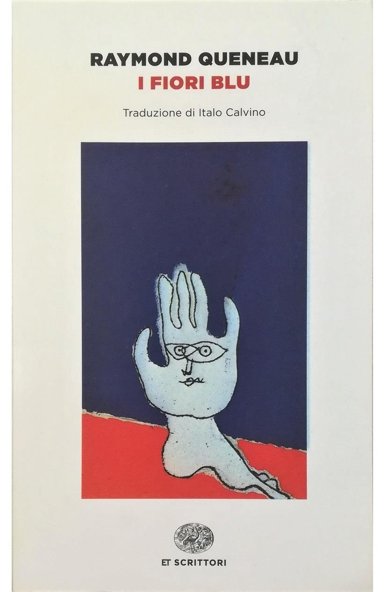

Desideravo da tempo percorrere la dorsale dei monti Pacoi, Naplis e Agarone, collegata mediante la mugosa Costa Pulize alla cima Clapadorie. Dalla cima del Palon dei Zàbus avevo osservato per bene il versante della suddetta dorsale in sinistra orografica del Serai, costituito da un caotico sovrapporsi di ripide pale boscose e rocciose; ho scelto come via di salita la facile pala boscosa che porta all'ampia sella fra la q1432 e la q1241, e come via di discesa la cresta Nord. Non ho neppure tentato di cercare la traccia (segnata sulla Tabacco) che passa sotto cresta in versante Rio di Misdí.
Da Borgo Cros si ha una vista completa sul vallone di Serai, chiuso a sx dalla dorsale Palon dei Zàbus - Punta Salvotis - Uarchèc, a dx dalla dorsale Agarone - Naplis - Pacoi e in fondo da Pale di Misdí e cima Clapadorie (innevate).
Nella foto a dx in primo piano si nota il costone su cui sale il sentierino (segnato sulla Tabacco) che porta sulla cima del monte Uarchèc; le due punte piú alte della dorsale, appena a sx di Pale di Misdí, sono la Punta Salvotis (a sx) e la q1345 (a dx).
Imbocco la traccia del rio Serai: mi ringrazierete per omini e tagli.
Si sfiora il torrente e quando il vallone si allarga si scende sul greto; poi conviene tenersi in dx orografica.
Arrivo alla pala di faggi scelta per la salita, ma decido di andare avanti ancora un po' fin sotto le pareti...
... cosí da osservare il canale che scende dalla sella a Sud della q1432, che credo essere percorribile.
(Aggiornamento: nel marzo 2025 l'amica Ivana, con Emanuele e Simone, ha percorso questo canale fino in cima. Un passaggio impegnativo di III e verso la fine roccia friabilissima che rende la salita difficile)
Inizio poi a salire per bosco e mughi: in foto il canale che divide le due pale boscose. In centro foto, in alto, si vede la forcella d'uscita, fra le quote q1432 e q1241 di Punta Agarone.
Uno sguardo indietro, verso Punta Salvotis e il possente Palon dei Zàbus.
Verso la seconda pala di faggi.
Arrivo in forcella... che fatica!
Dalla forcella raggiungo la q1241 dove trovo l'ometto di vetta. Devo confessare che l'obiettivo originario era salire sulla piú alta q1432, ovvero dove termina la traccia nera della Tabacco, ma l'ora tarda, la totale assenza di tracce, la neve, i mughi e la ripidezza mi hanno fatto desistere. Ma lo sai che lo stesso giorno sulla q1432 è salito Norman, dal rio di Misdí? Coincidenza non incredibile, di piú! Peccato non essersi incontrati.
Torneremo... magari salendo la Costa Pulize fino in cima Clapadorie? (C'è pure una relazione questa salita, di Gino Franz su In Alto 1927)
Dalla cima verso il Cjucis; dietro l'Amariana.
Dalla cima verso l'alto vallone di Serai, con la Punta Salvotis e il Palon dei Zàbus. Una settimana dopo ero già che camminavo per quei cengioni boscosi!
Ho inquadrato anche la placconata sotto la cima, che si vede anche da lontano.
Povici.
Scendo poi per la cresta Nord, nulla di particolarmente emozionante. Ogni talto qualche bello scorcio: in foto Moggio in val d'Aupa, sovrastato dal Monticello (PS: molto bella la traccia che percorre la Crete da la Mont, proprio sull'orlo dei precipizi).
Dagli stavoli Stivane il vallone Lusument: le tre quote, da sx a dx, sono lo Spic (1201), la q1264 e la q1320 (queste ultime divise dalla forcella Rus che fa capo al suddetto vallone). Vetta Criuze, anch'essa di quota 1320, è quella cima appena percettibile a destra della q1320, immediatamente prima della distesa di alberi.
***
